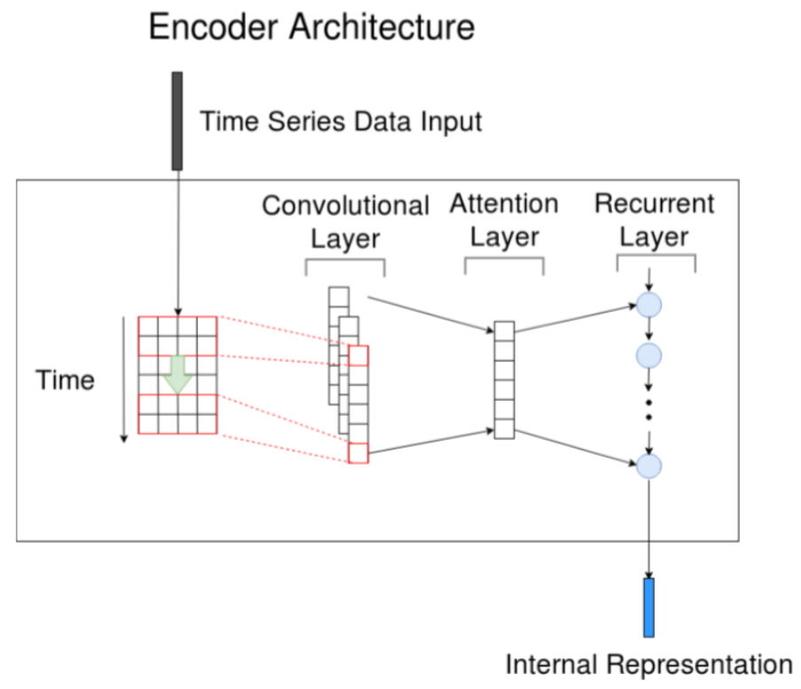
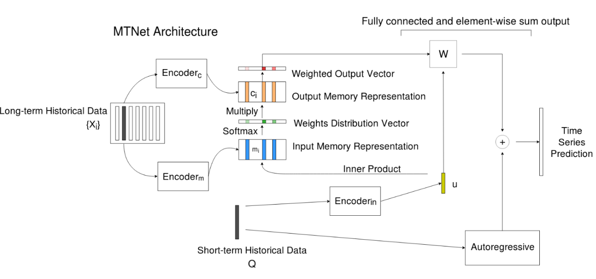

MTNet
MTNet Algorithm
As we have mentioned before, MTNet is a memory-network based solution for multivariate time-series forecasting. The input data has a form of time series signal with several variables observed in each time stamp. Input data is divided into two parts, long-term historical data {X_i} and a short-term data series Q. Long-term historical data typically has several data series and each of them has the same length of the short-term data series.
One of the main modules of MTNet is its Encoder. It composes of three parts, a convolutional layer, an attention layer and a recurrent layer. For the convolutional layer, we have cnn_hid_size filters with width as the number of input feature feature_dim and height as cnn_height. Then the convolution output is sent to a recurrent neural network with attention mechanism. You can have several RNN layers and the units number is set in rnn_hid_size The recurrent neural network is implemented as a GRU in this case.

As we have mentioned before, MTNet has two input, long-term historical data {X_i} and a short-term data series Q. The length of each long-term historical data series and the short-term data series is series_length and there are long_series_num long-term historical data series in all (typically 7 as shown in this flow chart). Each X_i in {X_i} is encoded by the encoder to get long_series_num input memory representations {m_i}. Short-term data series is encoded by the encoder to get a query vector u. By inner product between each m_i in {m_i} with u and a SoftMax operation, we get an attention weight distribution vector. The attention weight distribution vector is then element-wise multiplied by another encoded representation {c_i} and get a weighted output {o_i}. The weighted output is concatenated with the query vector u and sent through a fully connected layer with output dimension as target_dim.

There is another auxiliary autoregressive model works independently. The autoregressive model assumes that the value to be forecasted is relevant to its previous value. ar_window_size states the number of previous value you want to use in the regression. The output feature number is also target_dim.
At last, the autoregressive model result is added with the memory network result to get the final time series prediction.
You can find API instructions here.
Reference
Yen-YuChang, Fan-YunSun, Yueh-HuaWu, Shou-DeLin, A Memory-Network Based Solution for Multivariate Time-Series Forecasting.